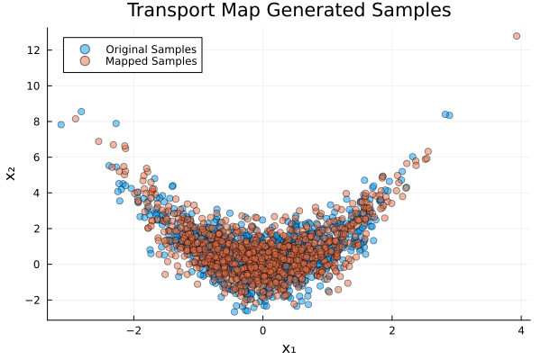
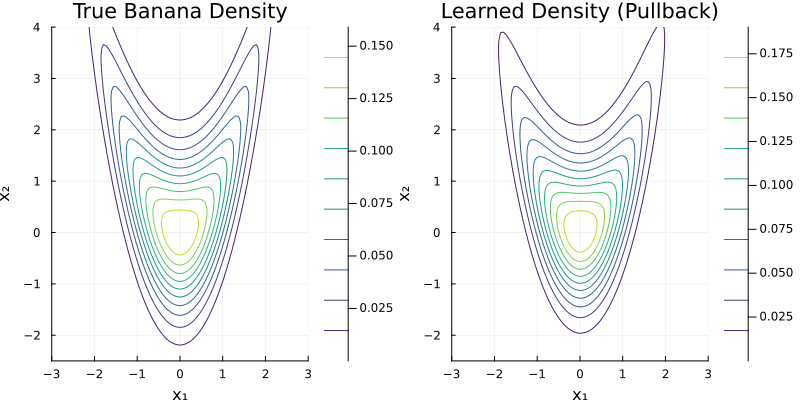

Banana: Map from Samples
This example demonstrates how to use TransportMaps.jl to approximate a "banana" distribution using polynomial transport maps when only samples from the target distribution are available.
Unlike the density-based approach, this method learns the transport map directly from sample data using optimization techniques. This is particularly useful when the target density is unknown or difficult to evaluate [1].
We start with the necessary packages:
using TransportMaps
using Distributions
using LinearAlgebra
using PlotsGenerating Target Samples
The banana distribution has the density:
\[p(x) = \phi(x_1) \cdot \phi(x_2 - x_1^2)\]
where $\phi$ is the standard normal PDF.
banana_density(x) = pdf(Normal(), x[1]) * pdf(Normal(), x[2] - x[1]^2)banana_density (generic function with 1 method)Set up the log-target function for sampling:
num_samples = 500Generate samples using rejection sampling (no external dependencies)
function generate_banana_samples(n_samples::Int)
samples = Matrix{Float64}(undef, n_samples, 2)
count = 0
while count < n_samples
x1 = randn() * 2
x2 = randn() * 3 + x1^2
if rand() < banana_density([x1, x2]) / 0.4
count += 1
samples[count, :] = [x1, x2]
end
end
return samples
end
println("Generating samples from banana distribution...")
target_samples = generate_banana_samples(num_samples)
println("Generated $(size(target_samples, 1)) samples")Generating samples from banana distribution...
Generated 500 samplesCreating the Transport Map
We create a 2-dimensional polynomial transport map with degree 2. For sample-based optimization, we typically start with lower degrees and can increase complexity as needed.
M = PolynomialMap(2, 2, :normal, Softplus())PolynomialMap:
Dimensions: 2
Total coefficients: 9
Reference density: Distributions.Normal{Float64}(μ=0.0, σ=1.0)
Maximum degree: 2
Basis: LinearizedHermiteBasis
Rectifier: Softplus
Components:
Component 1: 3 basis functions
Component 2: 6 basis functions
Coefficients: min=0.0, max=0.0, mean=0.0
Optimizing from Samples
The key difference from density-based optimization is that we optimize directly from the sample data without requiring the density function. Inside the optimization the map is arranged s.t. the "forward" direction is from the (unknown) target distribution to the standard normal distribution:
res = optimize!(M, target_samples)
println("Optimization result: ", res)Optimization result: * Status: success
* Candidate solution
Final objective value: 2.601890e+00
* Found with
Algorithm: L-BFGS
* Convergence measures
|x - x'| = 2.71e-08 ≰ 0.0e+00
|x - x'|/|x'| = 9.89e-09 ≰ 0.0e+00
|f(x) - f(x')| = 0.00e+00 ≤ 0.0e+00
|f(x) - f(x')|/|f(x')| = 0.00e+00 ≤ 0.0e+00
|g(x)| = 8.82e-10 ≤ 1.0e-08
* Work counters
Seconds run: 5 (vs limit Inf)
Iterations: 16
f(x) calls: 43
∇f(x) calls: 43Testing the Map
Let's generate new samples from the banana density and standard normal samples and map them through our optimized transport map to verify the learned distribution:
new_samples = generate_banana_samples(1000)
norm_samples = randn(1000, 2)1000×2 Matrix{Float64}:
1.16747 0.881595
0.731336 1.28497
0.795057 -0.206889
-0.240855 1.79745
1.64064 -0.735619
-0.100959 -0.034496
-0.516234 0.0488963
-0.423361 -0.555023
1.48823 -0.802945
1.12541 -1.0014
⋮
-0.564702 -0.331153
0.131013 -0.56482
1.64311 -1.99868
0.108568 1.5584
-0.722384 1.52445
-1.32091 -1.89413
0.393397 0.146234
0.156963 0.706113
-1.1308 1.0869Map the samples through our transport map. Note that evaluate now transports from reference to target, i.e. mapped_samples should be standard normal samples:
mapped_samples = evaluate(M, new_samples)1000×2 Matrix{Float64}:
-0.803062 -0.356548
0.816573 -0.278414
-1.2243 1.53688
0.112205 0.215047
1.47001 0.545069
-0.459509 -1.1371
-1.18181 -0.436767
0.922809 -0.618118
0.289193 0.0373221
-0.0938019 -2.94353
⋮
1.0156 1.43936
-0.28168 -1.26794
-0.312332 0.885433
0.407786 2.13889
-0.817617 -2.02421
0.531984 -0.318757
0.0114685 -0.870821
0.219393 1.31284
-0.714584 0.291612while pushing from the standard normal samples to the target distribution generates new samples from the banana distribution:
mapped_banana_samples = inverse(M, norm_samples)1000×2 Matrix{Float64}:
0.972977 1.75451
0.596097 1.52202
0.651025 0.229864
-0.236264 1.69316
1.38436 1.27009
-0.11714 -0.0508245
-0.470125 0.233457
-0.391348 -0.396538
1.25156 0.85621
0.936538 -0.0241455
⋮
-0.511199 -0.079585
0.0808681 -0.540315
1.38651 0.141657
0.0616827 1.41452
-0.64465 1.81944
-1.14875 -0.454419
0.30556 0.207515
0.103056 0.633856
-0.989052 2.00631Visualizing Results
Let's create a scatter plot comparing the original samples with the mapped samples to see how well our transport map learned the distribution:
p11 = scatter(new_samples[:, 1], new_samples[:, 2],
label="Original Samples", alpha=0.5, color=1,
title="Original Banana Distribution Samples",
xlabel="x₁", ylabel="x₂")
scatter!(p11, mapped_banana_samples[:, 1], mapped_banana_samples[:, 2],
label="Mapped Samples", alpha=0.5, color=2,
title="Transport Map Generated Samples",
xlabel="x₁", ylabel="x₂")
plot(p11, size=(800, 400))
and the resulting samples in standard normal space:
p12 = scatter(norm_samples[:, 1], norm_samples[:, 2],
label="Original Samples", alpha=0.5, color=1,
title="Original Banana Distribution Samples",
xlabel="x₁", ylabel="x₂")
scatter!(p12, mapped_samples[:, 1], mapped_samples[:, 2],
label="Mapped Samples", alpha=0.5, color=2,
title="Transport Map Generated Samples",
xlabel="x₁", ylabel="x₂")
plot(p12, size=(800, 400))
Density Comparison
We can also compare the learned density (via pullback) with the true density:
x₁ = range(-3, 3, length=100)
x₂ = range(-2.5, 4.0, length=100)-2.5:0.06565656565656566:4.0True banana density values:
true_density = [banana_density([x1, x2]) for x2 in x₂, x1 in x₁]100×100 Matrix{Float64}:
3.38667e-32 2.38559e-30 1.35878e-28 … 2.38559e-30 3.38667e-32
7.19036e-32 4.94664e-30 2.75301e-28 4.94664e-30 7.19036e-32
1.52005e-31 1.0213e-29 5.55386e-28 1.0213e-29 1.52005e-31
3.19956e-31 2.09953e-29 1.1156e-27 2.09953e-29 3.19956e-31
6.70583e-31 4.29754e-29 2.23127e-27 4.29754e-29 6.70583e-31
1.3994e-30 8.75882e-29 4.44349e-27 … 8.75882e-29 1.3994e-30
2.90776e-30 1.77746e-28 8.81094e-27 1.77746e-28 2.90776e-30
6.01595e-30 3.59153e-28 1.7396e-26 3.59153e-28 6.01595e-30
1.2393e-29 7.22585e-28 3.41982e-26 7.22585e-28 1.2393e-29
2.54202e-29 1.44752e-27 6.694e-26 1.44752e-27 2.54202e-29
⋮ ⋱
4.15273e-10 3.40506e-9 2.35888e-8 3.40506e-9 4.15273e-10
5.95589e-10 4.76951e-9 3.22849e-8 4.76951e-9 5.95589e-10
8.50524e-10 6.65197e-9 4.39968e-8 6.65197e-9 8.50524e-10
1.20936e-9 9.2375e-9 5.96995e-8 9.2375e-9 1.20936e-9
1.71219e-9 1.27728e-8 8.06582e-8 … 1.27728e-8 1.71219e-9
2.41365e-9 1.75852e-8 1.08506e-7 1.75852e-8 2.41365e-9
3.38787e-9 2.41065e-8 1.4534e-7 2.41065e-8 3.38787e-9
4.73485e-9 3.2904e-8 1.93842e-7 3.2904e-8 4.73485e-9
6.58892e-9 4.47191e-8 2.57416e-7 4.47191e-8 6.58892e-9Learned density via pullback through the transport map. Note that "pullback" computes the density of the mapped samples in the standard normal space:
learned_density = [pullback(M, [x1, x2]) for x2 in x₂, x1 in x₁]100×100 Matrix{Float64}:
2.92176e-30 5.22225e-29 8.75525e-28 … 1.23147e-32 4.28572e-34
6.10444e-30 1.07443e-28 1.77373e-27 2.95517e-32 1.05091e-33
1.26962e-29 2.20047e-28 3.577e-27 7.05029e-32 2.56194e-33
2.6286e-29 4.48615e-28 7.1807e-27 1.67223e-31 6.20912e-33
5.41755e-29 9.10445e-28 1.43493e-26 3.94322e-31 1.49606e-32
1.1115e-28 1.83931e-27 2.85437e-26 … 9.24426e-31 3.58369e-32
2.27007e-28 3.69894e-27 5.65204e-26 2.15457e-30 8.53437e-32
4.61525e-28 7.40492e-27 1.11408e-25 4.99245e-30 2.02056e-31
9.34066e-28 1.47565e-26 2.18596e-25 1.15009e-29 4.75588e-31
1.88117e-27 2.92625e-26 4.26803e-25 2.63307e-29 1.11248e-30
⋮ ⋱
2.20074e-9 9.39736e-9 3.7493e-8 1.40335e-8 3.22396e-9
3.02894e-9 1.2728e-8 4.99711e-8 1.97467e-8 4.62729e-9
4.15045e-9 1.71631e-8 6.63079e-8 2.76292e-8 6.60387e-9
5.66218e-9 2.30415e-8 8.75972e-8 3.84402e-8 9.37148e-9
7.69057e-9 3.07972e-8 1.15211e-7 … 5.31803e-8 1.32238e-8
1.03997e-8 4.09822e-8 1.50863e-7 7.31588e-8 1.85544e-8
1.40015e-8 5.42958e-8 1.96678e-7 1.00077e-7 2.58869e-8
1.87679e-8 7.16187e-8 2.55277e-7 1.36131e-7 3.59136e-8
2.50468e-8 9.40538e-8 3.29881e-7 1.84134e-7 4.95433e-8Create contour plots for comparison:
p3 = contour(x₁, x₂, true_density,
title="True Banana Density",
xlabel="x₁", ylabel="x₂",
colormap=:viridis, levels=10)
p4 = contour(x₁, x₂, learned_density,
title="Learned Density (Pullback)",
xlabel="x₁", ylabel="x₂",
colormap=:viridis, levels=10)
plot(p3, p4, layout=(1, 2), size=(800, 400))
Combined Visualization
Finally, let's create a combined plot showing both the original samples and the density contours:
scatter(target_samples[:, 1], target_samples[:, 2],
label="Original Samples", alpha=0.3, color=1,
xlabel="x₁", ylabel="x₂",
title="Banana Distribution: Samples and Learned Density")
contour!(x₁, x₂, learned_density./maximum(learned_density),
levels=5, colormap=:viridis, alpha=0.8,
label="Learned Density Contours")
xlims!(-3, 3)
ylims!(-2.5, 4.0)
Quality Assessment
We can assess the quality of our sample-based approximation by comparing statistics of the original and mapped samples:
println("Sample Statistics Comparison:")
println("Original samples - Mean: ", Distributions.mean(target_samples, dims=1))
println("Original samples - Std: ", Distributions.std(target_samples, dims=1))
println("Mapped samples - Mean: ", Distributions.mean(mapped_banana_samples, dims=1))
println("Mapped samples - Std: ", Distributions.std(mapped_banana_samples, dims=1))Sample Statistics Comparison:
Original samples - Mean: [-0.025486795679463742 0.7257029789161059]
Original samples - Std: [0.8544913224219809 1.374722349322466]
Mapped samples - Mean: [-0.045973393592011 0.7708205333136829]
Mapped samples - Std: [0.8784382406308131 1.4003688867988244]Interpretation
The sample-based approach learns the transport map by fitting to the empirical distribution of the samples. This method is particularly useful when:
- The target density is unknown or expensive to evaluate
- Only sample data is available from experiments or simulations
- The distribution is complex and difficult to express analytically
The quality of the approximation depends on:
- The number and quality of the original samples
- The polynomial degree of the transport map
- The optimization algorithm and convergence criteria
Further Experiments
You can experiment with:
- Different polynomial degrees for more complex distributions
- Different rectifier functions (
Softplus(),ShiftedELU()) - More sophisticated MCMC sampling strategies
- Cross-validation techniques to assess generalization
- Different sample sizes to study convergence behavior
This page was generated using Literate.jl.